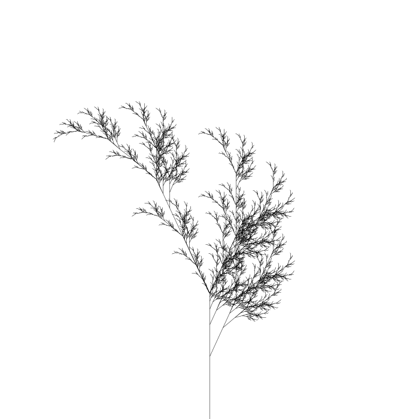
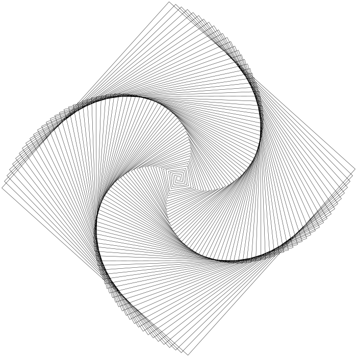

L-systems are a kind of formal grammar defined by Lindermayer. In LILiS, an L-system is composed of a name, a list of definitions, an axiom and some rules. The axiom will be rewritten using the rules.
Let us start by drawing the well known Von Koch curve. This curve is a simple segment and each iteration is replaced by four smaller segments, as expressed in this L-system:
Von_koch_simple {
axiom = -(90) f(0.5) +(90) F(1)
rule F(l) = F(l/3) +(60) F(l/3) -(120) F(l/3) +(60) F(l/3)
}
Let's put this L-system in a file bank_lsystem. Using the glilis executable, you can use the following command line to draw a beautiful Von koch curve and show it in a gtk window.
glilis -n 6 bank_lsystem Von_koch_simple --gtk
Here are the results for generation one to five :
Symbols have associated graphical meanings, as in the Turtle language. F(l) is a segment of length l, f(l) is an invisible segment of length l and +(a) and -(a) are clockwise and counter-clockwise rotations of angle a in degrees.
Instead of showing the L-system in a gtk window, we could also save it in a png
glilis -n 6 bank_lsystem Von_koch_simple --png von_koch.png
or, if LILiS was compiled with tyxml, in a (obviously prettier, but quite bigger) svg:
glilis -n 6 bank_lsystem Von_koch_simple --svg von_koch.svg
You can discover the rest of the command with the help included:
glilis --help
A few symbols are predefined, with graphical meanings :
F(l) : Forward, takes a length as argument. B(l) : Backward, takes a length as argument. f(l) : forward without drawing. +(a) : Turn clockwise, takes an angle in degree as argument. -(a) : Turn counter-clockwise, takes an angle in degree as argument. [ : Save the current position on the stack. ] : Restore the last saved position.[ and ] symbols allows branching in the (normally linear) path of the turtle. We will see how to use it in the next example.
A bunch of predefined symbols is not enough to express complex drawings comfortably, hence it is possible to define symbols as needed. For example if we want to draw a fern, we need a placeholder symbol that will emit the various branches at each iterations but will not draw anything. Here is a L-system to draw it:
fern {
def X(d)
axiom = f(0.5) -(90) f(1) -(180) X(0.3)
rule X(x) =
F(x/2) -(25) [ [ X(x/2) ] +(25) X(x/2) ]
+(25) F(x/2) [ +(25) F(x/2) X(x/2) ] -(25) X(x/2)
}
With the command line glilis -n 5 bank_lsystem fern --gtk , we get this beautiful fern:

It is possible to define multiple rules on the various symbols. All the rules are applied during each iteration on the relevant symbol. If multiple rules affect the same symbol, only the last one is used. This feature allows us to draw the Dragon curve.
dragon {
def X(d) Y(d) *
axiom = -(45) f(0.47) * F(0.6) X(0.6)
rule X(l) = X(l/sqrt(2)) + Y(l/sqrt(2)) F(l/sqrt(2)) +
rule Y(l) = -(90) F(l/sqrt(2)) X(l/sqrt(2)) -(90) Y(l/sqrt(2))
rule F(l) = F(l/sqrt(2))
rule * = * -(45)
}
Let there be dragons!
Abstract symbols allows to do complex calculations by using them as placeholders, but we may want to add some new shapes in our drawings. To do so, we can give a graphical meaning to a new symbol.
Spin_it {
def X(l)
def Square(l) = Save Turn(45) forward(l*sqrt(2)/2)
Turn(-135) Forward(l)
Turn(-90) Forward(l)
Turn(-90) Forward(l)
Turn(-90) Forward(l) Restore
axiom = - f(0.5) + f(0.5) X(0.01)
rule X(l) = Square(l) +(2) X(l + 0.01)
}

You may notice that the commands in the definition of Square are not the same that we have used before. It's because those are graphical commands that are handled directly by the drawing backend. Each backend can implement its own set of commands. For now, these commands are implemented:
Forward(l) forward(l) Turn(a) Save Restore Color(r,g,b,a) def F(d?1) = Forward(d) def f(d?1) = forward(d) def +(x?90) = Turn(x) def -(x?90) = Turn(- x) def [ = Save def ] = Restore def color(r,g,b,a?1) = Color(r,g,b,a)
We see here one last feature in LILiS: a default value can be defined for an argument, making it optional. Hence, instead of writing -(90) it is possible to write just -. Optional arguments can only appear at the right most part of the arguments in a function and will be resolved from right to left.
The dear reader is welcome to consider this very nice L-system, as a finishing master piece for this tutorial.
Von_koch_color {
def C(d) = Color(0,d,0.1,1)
def F(l,d,k) = Forward(l)
axiom = - f(0.28) + f(0.05) F(0.9,0,0.9)
rule F(l,d,k) =
C(d) F(l/3, d, k/4) +(60)
C(d + k/4) F(l/3, d + k/4, k/4) -(120)
C(d + k/2) F(l/3, d + k/2, k/4) +(60)
C(d + 3/4*k) F(l/3, d + 3/4*k, k/4)
}
If this is not enough, more L-systems are available in the sources, in the bank_lsystem file.
LILiS is also an OCaml library designed to answer all your L-system needs. This library is divided in 3 packages
lilis is the library for parsing, checking and evaluating L-systems.
The module Lilis contains a functorized engine that allows to evaluate L-systems on any stream-like data-structure.
A stream-like data-structure is any kind of structure that respect Lilis.S. Several of them are implemented :
LisCC in the lilis.containers package, using companion_cube's containers. It contains LisCC.Sequence which is the most efficient stream implementation.LisBatteries in the lilis.batteries package, using Batteries.LisCFStream in the lilis.cfstream package, using CFStream.LisCore in the lilis.core package, using Core.LisUtils contains all the parsing and verification functions.
LisOptim contains optimization passes on L-systems.
Calc is a small library to evaluate arithmetic expressions. It's a helper for Lilis.
Glilis contains a skeleton drawer for graphical backends.
Two backend are currently implemented :
LisCairo draw to png and gtk using cairo. A rasterizing svg backed is also contained.LisTyxml can produce svg file or svg elements using tyxml.LisJsoo is a js_of_ocaml backend, using js_of_ocaml.graphics.| Calc |
Small library to evaluate simple arithmetic expressions.
|
| CalcUtils |
Input/Output utilities for arithmetic expressions.
|
| Lilis |
Library to Interpret Lindenmayer Systems.
|
| LisUtils |
Utilities for Lilis such as parsing and verification on L-systems.
|
| LisOptim |
Optimization passes on L-systems.
|
| LisCC | |
| LisBatteries |
Streams implementations from Batteries.
|
| LisCFStream |
CFStream library, a stream extension in core's style.
|
| LisCore |
Core's Sequence.
|
| Glilis |
Graphical primitives for drawing L-systems.
|
| LisCairo |
Draw with cairo.
|
| LisTyxml |
Draw to a svg using tyxml.
|
| LisJsoo |
A js turtle.
|
{kind=link}
{kind=link}
{kind=link}
{kind=link}
{kind=link}
{kind=link}
{kind=link}
{kind=link}
{kind=link}
{kind=link}
{kind=link}
{kind=link}
{kind=link}